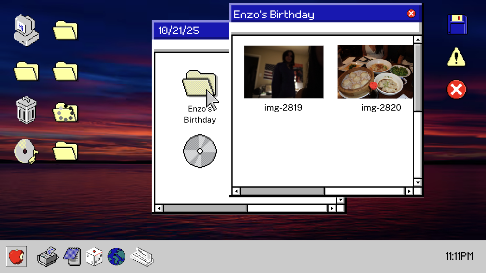

ATCM 2335: Internet Studio I
An interactive storytelling website that transforms a familiar computer desktop interface into a digital mystery.

Tools: HTML, CSS, JavaScript
Timeline: Summer 2026
Role: Designer & Developer
This project explores how digital artifacts can reveal personal stories. Instead of using a computer as a traditional workspace, the interface invites users to investigate files, images, notes, and browsing history to reconstruct the life of an unknown person.
I designed the interface using HTML and CSS while implementing interactive elements with JavaScript. I focused on creating a familiar desktop environment while adding storytelling elements that encourage curiosity and exploration.
The final experience demonstrates how web design can be used as a storytelling medium by combining interface design, interaction, and narrative structure.
Back to Projects